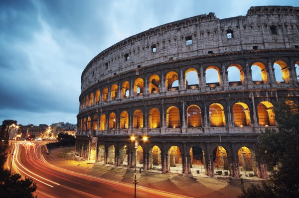

Principais lugares turísticos da Europa!
Neste site você observará algumas de suas melhores opções para apreciar como um turista na Europa
Big Ben é o nome de um grande sino instalado na torre noroeste do Palácio de Westminster, a sede do Parlamento Britânico, localizado em Londres, no Reino Unido.
Como visto na imagem acima, a sua beleza é indiscutível e se faz valer a pena receber sua visita.

O Coliseu é uma atração bastante apreciada devido a toda a sua beleza e história na Roma Antiga, no qual era onde acontecia diversas atividades de entretenimento dos romanos.

Torre Eiffel (em francês: Tour Eiffel, /tuʀ ɛfɛl/) é uma torre de treliça de ferro forjado no Champ de Mars, em Paris, França. Tem o nome do engenheiro Gustave Eiffel, cuja empresa projetou e construiu a torre.
Ao visitar a frança fica irresístivel ir dar uma "olhadinha" nessa belíssima obra.